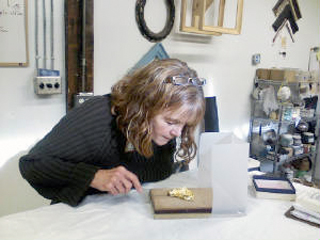

Clearance and Close Out items! Reduced pricing on leaf, brushes and more. - Purchase Gift Cards

Online classes now on ZOOM!
During COVID-19 all classes are taught via ZOOM
Gilding Classes from The Charles Douglas Gilding Studio
Professional Gilding Classes by one of the industry's most respected Master Gilders - Charles Douglas.
The GildedPlanet.com is excited to partner with the Charles Douglas Gilding Studio to provide you with the highest quality, hands on training for the gilding arts. These exciting classes and weekend seminars provide you with basic to advanced techniques and principles for a variety of gilding applications. Whether you're an interior designer, architect, professional gilder, artisan or someone simply interested in this ancient craft, you'll find the classes offered by the Charles Douglas Gilding Studio a must-do resource for all your gilding needs.
Charles is a committed teacher of the gilding arts and offers classes in a variety of gold leaf gilding methods and techniques in Seattle and New York.
About our Gilding classes

Gilding Classes
Each class is designed to specifically address different substrates, including objects, furniture and picture frames. Traditional techniques, including historical overview, are paired with contemporary processes. You'll learn proper terminology, dive into materials and various uses depending on your project. You'll also have first hand troubleshooting and problem solving experience directly with Master Gilder Charles Douglas. Each course is paired with a full materials list, a one stop location for all your course supplies. For attendees of each course, GildedPlanet offers a special materials discount. Purchase the whole materials package at a reduced 'kit' pricing, or individual products to expand your current tool kit.
Review our course offering below and embark on a path to creativity incorporating the wondrous world of the Gilding Arts!
Gilding classes are held periodically throughout the year. Please feel free to call or write if you have questions or wish to inquire about the status of a particular workshop, to explore private instruction or to ask about arrangements for conducting a gilding workshop in your area.
March 22, 29th, April 5th and 6th 2025

(On-Line) Master Kintsugi Classes
with Catherine Lignier
Transform broken ceramics into exquisite, gold-adorned masterpieces while mastering Kintsugi under the guidance of Catherine Lignier. This exclusive, four-session online course immerses you in the authentic techniques passed down through generations of Japanese Urushi lacquer artisans.
JANUARY 2, 2021
Sacred Gilding...Gilding the Buddha
JANUARY 2, 2021
Zoom! Online Masterclass Tutorial - Sacred Gilding...Gilding the Buddha
Join us Online during this first installment of the Gilding in the Sacred Realm series.
We begin with a brief discussion of the use of gilding in Sacred practice, from Christian Orthodox Iconography to the gilded altars of Hare Krishna with an emphasis on the technical use of the Oil Gilding method.
Gilder Charles Douglas will demonstrate applying a thin coating of oil size to a small replica of one of the 29 named Buddhas while using traditional gilder's tools in gilding with genuine 12kt loose gold leaf. Students may use their own tools, gold, and materials to follow along during this very special 90 minute Masterclass Tutorial or simply sit back, watch and enjoy!
JANUARY 6 - FEBRUARY 24, 2021
Traditional Water Gilding for Beveled Edge Frame Mats
Designed for the Custom Picture Framer, this class takes the student through each step of the beautiful ancient method of traditional water gilding. This particular method of gilding brings an enhanced elegance to the beveled edge of frame mats often used for photographs and works of art on paper.
Students will learn to make and apply rabbit skin glue and gesso while gilding two class projects in 23kt gold leaf and 12kt white gold leaf over a choice of red, black, or blue clay boles. Gilding will be burnished bright and rubbed to reveal the underlying clay color.
JUNE 22 - JULY 27, 2022
(On-line) Glass Gilding... Introductiojn to Verre Églomisé
This 8 week Intensive Online Gilding Course that introduces students to the art of verre églomisé with a focus on achieving a proper balance between brilliancy and bonding between the gold and silver leaf and the glass. Explore the beautiful artistry of gilded mirrors In both Modern solid gild and abraded ‘antique’ Finishes. Learn to gild with precious 23k gold and 6k white gold leaf, choose the appropriate oil paint for ‘backing up’, and etch designs into gilded glass, an historical approach to verre églomisé.
JULY 12, 2022
(On-line) Sacred Gilding...Gilding the Buddha in 23kt Gold Leaf
Sacred Gilding...Gilding a Stone Buddha in 23kt Gold Leaf, Toned in Raw Umber
Join us Online during this first installment of the Gilding in the Sacred Realm series.
We begin with a brief discussion of the use of gilding in Sacred practice, from Christian Orthodox Iconography to the gilded altars of Hare Krishna with an emphasis on the technical use of the Oil Gilding method.
Gilder Charles Douglas will demonstrate applying a thin coating of oil size to a small replica of one of the 29 named Buddhas while using traditional gilder's tools in gilding with genuine 23kt loose gold leaf. Students may use their own tools, gold, and materials to follow along during this very special Masterclass Tutorial or simply sit back, watch and enjoy!
JULY 19 and 26, 2022
(On-line) Laying Gold Leaf - A Masterclass For Water Gilded Panels
Traditional Water Gilding involves a minimum of ten steps from size preparation of the ground to burnishing genuine gold or silver leaf. This special focus study offers a concentrated look into the laying of 23k gold leaf onto a prepared wood Panel.
Laying gold leaf on a flat surface has specific requirements for a beautiful end result in gilding, from the amount of water applied to the surface and addressing any potential air bubbles or pinholes to tamping and burnishing.
The class project Panel will be gessoed, sanded, and clayed, ready for the gilding during this Summer Tutorial. The intent is to focus simply on the laying of leaf and the intricacies involved during this intensive, particular step in water gilding.
Limited to 10 Students. Both class sessions are Live and Recorded which remain viewable for six months. All Levels Welcome!
JANUARY 8 - FEBRUARY 26, 2021
Creating the Antique Dutch Black Finish...
with Genuine Silver gilt edge
Join us as we go through each step of the Antique Dutch Black Finish as inspired by 17thc frames from Holland. Before we're finished we'll gild the frame Lip in genuine Silver Leaf and tone with an antique wash. A rare opportunity to learn this beautiful finish for picture frames!
Note: Materials list will be provided for all classes. Dutch Black will require shellac (ruby, orange or clear in order of preference). Also, casein paint: black, raw umber, and yellow ochre as well as denatured alcohol and a raw wood picture frame or other raw wood object which you would like to apply this finish.
JANUARY 9 - 30, 2021
Gold Leaf Gilding for Works of Art on Canvas, Paper, and Panels...a Study for Fine Artists
Students explore the various methods of working with gold and silver leaf to create a 23k gilded ground as an element of composition for painting. Discover the many uses of gilding within works of art through online instruction including gilding of high-relief for embellishment, an intro to traditional water gilding and pastiglia, and use of glair, oil size, acrylic emulsion, and gum ammoniac as mordants for gilding.
FEBRUARY 6 - 20, 2021
Clay Bole... an In-Depth Study
In this special 3-part series we take an in-depth look at this true Clay Bole, from its raw dry-cone form to the exotic color palette of traditional reds and yellows to green, blue, black, and pink.
Available in pre-mixed form where the clay is mixed with water ready for use, students will learn to mix their own clay bole from dry cones in a tumbler while learning to combine colors for color-matching, important to restoration and custom gilding for frames, furniture, and architectural detail.
Students will also discover the different approaches needed in applying and treating the different color boles as their properties differ. We also explore some of the historical aspects of various color boles used in different countries over centuries past.
FEBRUARY 27 - APRIL 3, 2021
Glass Gilding... Building the Foundation for Verre Églomisé
Glass Gilding. The use of gold or Silver leaf on glass goes back to early Roman times and was a popular technique used for Looking Glass Mirrors during eighteenth and nineteenth century England.
Glass Gilding... the Foundation for Verre Églomisé - Learn the beautiful ancient art of reverse glass gilding and discover the steps involved in achieving a strong and brilliant bond between glass and leaf. Students will learn to properly clean the glass, prepare gelatin size, gild the glass with genuine white gold and be introduced to the concept of engraving the gilding in reverse before the final step of backpainting...plus abrading, candlesmoke, and Black India Ink for special effects!
MARCH 3 - APRIL 7, 2021
A Study in Oil Gilding...and other Mordants
Designed to produce a soft satin to a semi-gloss appearance, oil gilding is the most often used method for gilding exterior architecture including Domes, Cupolas, and incised lettering of stonework. It is also used for frames, furniture, and interior architectural detail.
This popular method of gilding is often where gilders begin. Although less time-intensive than traditional water gilding its properties still need to be properly understood to produce an attractive and long-lasting finish.
MARCH 5, 2021
Traditional Water Gilding
Be guided through each step of this beautiful, ancient method of gold leaf gilding for use on such objects as picture frames, furniture, and architectural detail. Students will learn Online to prepare rabbit skin glue, traditional gesso, and clay bole grounds followed by laying and burnishing genuine 23 kt gold leaf and basic toning.
MAY 8 - JUNE 26, 2021
Gold Leaf Restoration of Gilded Frames and Furniture.
This new Online class provides students with an introduction to the essential methods and techniques of gold leaf restoration including preparation and use of gesso and gesso putty for infilling, crackle gesso, mould casting for the repair of broken or missing decorative elements and the basics of traditional water gilding, oil gilding, and toning.
FEBRUARY 4 - MARCH 25, 2022
(On-line) Pastiglia - The Art of Gilded Raised Gesso.
Pastiglia is is an ancient aspect of the art of Traditional Water Gilding. Its raised characteristic has been used for centuries in manuscript illumination as well as by contemporary calligraphers. It has also been used as Relief ornamentation for frames dating back to the Italian Renaissance and discussed in Cennini’s 15th c Treatise Il Libro Dell’Arte.
Students will be guided through the process of gilding a Pastiglia Relief on Canvas and Picture Frame moulding including preparing the surface, making rabbit skin glue size and gesso, drawing the raised gesso design, applying clay bole, gilding and burnishing in 23k gold leaf, and learning to adhere gold leaf through diaphragmatic breath.
FEBRUARY 5 - MARCH 26, 2022
(On-line) Traditional Water Gilding...for Panels!
Added Series by Popular Demand! This Workshop takes the student on a journey through each step of the ancient traditional water gilding method specifically for panels from the laying and gluing of linen, and preparing and applying gesso and clay bole to laying and burnishing genuine 23k gold leaf and an intriguing introduction to granito, the technique of punchwork and incision for decorative embellishment.
Developed for the Fine Artist as well as the student of Iconography, each lesson addresses a specific step of the process, keeping it challenging while not overwhelming.
FEBRUARY 5 - MARCH 26, 2022
(On-line) Gold Leaf Gilding for Works of Art on Canvas, Paper, and Panels...a Study for Fine Artists
Students explore the various methods of working with gold and silver leaf to create a 23k gilded ground as an element of composition for painting. Discover the many uses of gilding within works of art through online instruction including gilding of high-relief for embellishment, an intro to traditional water gilding and pastiglia, and use of glair, oil size, acrylic emulsion, and gum ammoniac as mordants for gilding.
FEBRUARY 5 - MARCH 26, 2022
(On-line) Gold Leaf Restoration: Moulds, Casting, Beginning Water Gilding
Learn to make traditional gilder's gesso, gesso putty, prepare a simple, non-toxic two part mould, cast, repair broken decorative elements, and in-gild with 23kt gold leaf. Emphasis is on restoring water gilded frames, furniture, and gilded objects. All Levels Welcome!
FEBRUARY 8 - MARCH 29, 2022
(On-line) The Restoration Series: Re-Gilding Frames in 23kt Gold leaf
Re-gilding a frame that has an existing finish can be the perfect solution for bringing new life to the aged frame or one that has fallen under disrepair. But there are also considerations of preservation and conservation, namely, how can we preserve a gilded object and its history while also returning a state of elegance to a once beautiful picture frame that will present the artwork appropriately?
FEBRUARY 10 - FEBRUARY 24, 2022
(On-line) Sgraffito
Sgraffito, Italian for ‘scratched’, is a decorative process used in gilding where design elements are etched into an egg tempera paint which is applied over a burnished water gilded surface revealing the brilliant gold leaf ground underneath.
The use of this medieval decorative approach was used on early gilded and tempera panel paintings and statuary and continues today as used as embellishment in the centuries-old tradition of finely handcrafted picture frames.
MARCH 30 - APRIL 13, 2022
(On-line) Gilding with Garlic...for Paper and Statuary
Join us as we venture into the medieval world of gilding with garlic where we’ll crush these aromatic bulbs with a mortar and pestle.
We'll then mix the juice with raw gum ammoniac from Northern Africa, and gild with genuine 24kt gold leaf on watercolor paper and a stone cast Buddha statue.
April 27 - June 15, 2022
(On-line) Gilded Picture Frame Series: Oil Gilded Antiqued Brass Metal Leaf Finish
A new addition to the Gilded Picture Frame Series! Join us as we go through each step of creating the Antiqued Brass Metal Leaf Finish. Always a popular Finish in picture framing due in part to its lesser production cost compared to traditional water gilding, brass leaf - also known as gold metal leaf, composition gold, and Dutch metal leaf - may be shellacked and left bright or toned to create added depth and complexity.
APRIL 27 - JUNE 15, 2022
(On-line) Creating the Antique Dutch Black Finish...
with Gilded leaf edge
Join us as we go through each step of the Antique Dutch Black Finish as inspired by 17thc frames from Holland. Before we're finished we'll gild the frame Lip in genuine Silver Leaf and tone with an antique wash. A rare opportunity to learn this beautiful finish for picture frames!
Note: Materials list will be provided for all classes. Dutch Black will require shellac (ruby, orange or clear in order of preference). Also, casein paint: black, raw umber, and yellow ochre as well as denatured alcohol and a raw wood picture frame or other raw wood object which you would like to apply this finish.
APRIL 29 - JUNE 17, 2022
(On-line) Pastiglia - The Art of Gilded Raised Gesso.
Pastiglia is is an ancient aspect of the art of Traditional Water Gilding. Its raised characteristic has been used for centuries in manuscript illumination as well as by contemporary calligraphers. It has also been used as Relief ornamentation for frames dating back to the Italian Renaissance and discussed in Cennini’s 15th c Treatise Il Libro Dell’Arte.
Students will be guided through the process of gilding a Pastiglia Relief on Canvas and Picture Frame moulding including preparing the surface, making rabbit skin glue size and gesso, drawing the raised gesso design, applying clay bole, gilding and burnishing in 23k gold leaf, and learning to adhere gold leaf through diaphragmatic breath.
APRIL 30 - JUNE 18, 2022
(On-line) Traditional Water Gilding...for Panels!
Added Series by Popular Demand! This Workshop takes the student on a journey through each step of the ancient traditional water gilding method specifically for panels from the laying and gluing of linen, and preparing and applying gesso and clay bole to laying and burnishing genuine 23k gold leaf and an intriguing introduction to granito, the technique of punchwork and incision for decorative embellishment.
Developed for the Fine Artist as well as the student of Iconography, each lesson addresses a specific step of the process, keeping it challenging while not overwhelming.
APRIL 30 - JUNE 18, 2022
(On-line) Gold Leaf Gilding for Works of Art on Canvas, Paper, and Panels...a Study for Fine Artists
Students explore the various methods of working with gold and silver leaf to create a 23k gilded ground as an element of composition for painting. Discover the many uses of gilding within works of art through online instruction including gilding of high-relief for embellishment, an intro to traditional water gilding and pastiglia, and use of glair, oil size, acrylic emulsion, and gum ammoniac as mordants for gilding.
MAY 3 - JUNE 21, 2022
(On-line) Gilded Picture Frame Series: Traditional Water Gilding for Picture Frames… in 12k White Gold Leaf
New Evening Time Schedule for the East Coast (US)! ~ This popular Workshop takes the student on a journey through each step of the ancient traditional water gilding method, from gesso and clay bole to laying and burnishing genuine 12k white gold leaf. The focus of this particular class project is a Contemporary 1” flat Slanted profile with a light rub to show the underlying clay bole, a challenging though beautiful water gilded Finish.
The Art of Crackle Gesso
Learn to Make Crackle Gesso!
The intriguing look of crackle gesso can be used as a ground for traditional water gilding, oil gilding, and painted finishes. A perfect match for those studying gilding and who wish to take a few extra hours to learn how to make and apply this custom gilder's gesso.
Traditional Water Gilding for Beveled Edge Frame Mats
Designed for the Custom Picture Framer, this class takes the student through each step of the beautiful ancient method of traditional water gilding. This particular method of gilding brings an enhanced elegance to the beveled edge of frame mats often used for photographs and works of art on paper.
Students will learn to make and apply rabbit skin glue and gesso while gilding two class projects in 23kt gold leaf and 12kt white gold leaf over a choice of red, black, or blue clay boles. Gilding will be burnished bright and rubbed to reveal the underlying clay color.
Clay Bole... an In-Depth Study
In this special 3-part series we take an in-depth look at this true Clay Bole, from its raw dry-cone form to the exotic color palette of traditional reds and yellows to green, blue, black, and pink.
Available in pre-mixed form where the clay is mixed with water ready for use, students will learn to mix their own clay bole from dry cones in a tumbler while learning to combine colors for color-matching, important to restoration and custom gilding for frames, furniture, and architectural detail.
Students will also discover the different approaches needed in applying and treating the different color boles as their properties differ. We also explore some of the historical aspects of various color boles used in different countries over centuries past.
Roman Gilding...a Study in Bronze Powder and other Powder Gilding Techniques
Roman Gilding is a method of applying a finely ground Bronze Powder to a prepared surface in a water based method embedded in rabbit skin glue as a binder. This is one of several methods of working with bronze powders for decorative finishes often used in the early 20th c for picture frames
Gold Leaf Restoration of Gilded Frames and Furniture.
This new Online class provides students with an introduction to the essential methods and techniques of gold leaf restoration including preparation and use of gesso and gesso putty for infilling, crackle gesso, mould casting for the repair of broken or missing decorative elements and the basics of traditional water gilding, oil gilding, and toning.
Traditional Water Gilding
Be guided through each step of this beautiful, ancient method of gold leaf gilding for use on such objects as picture frames, furniture, and architectural detail. Students will learn Online to prepare rabbit skin glue, traditional gesso, and clay bole grounds followed by laying and burnishing genuine 23 kt gold leaf and basic toning.
A Study in Oil Gilding...and other Mordants
Designed to produce a soft satin to a semi-gloss appearance, oil gilding is the most often used method for gilding exterior architecture including Domes, Cupolas, and incised lettering of stonework. It is also used for frames, furniture, and interior architectural detail.
This popular method of gilding is often where gilders begin. Although less time-intensive than traditional water gilding its properties still need to be properly understood to produce an attractive and long-lasting finish.
Traditional Water Gilding
Be guided through each step of this beautiful, ancient method of gold leaf gilding for use on such objects as picture frames, furniture, and architectural detail. Students will learn Online to prepare rabbit skin glue, traditional gesso, and clay bole grounds followed by laying and burnishing genuine 23 kt gold leaf and basic toning.
TBD
Gold Leaf Restoration: Part II
Gold Leaf Restoration Part II is the continuation of the popular Introduction to Gold Leaf Restoration class.
In Gold Leaf Restoration Part I we explored a non-toxic silicone method of creating moulds for casting missing frame ornaments in hydrocal, gesso putty for filling holes and gouges, and traditional water gilding in 23k gold leaf.
Gold Leaf Restoration Part II continues the process of restoring gilded frames which can also be applied to gilded furniture and other wooden objects. The focus is gesso consolidation for stabilizing loose gilded gesso with such binders as rabbit skin glue, isinglass, fish glue, and discussion of modern consolidating agents.
The use of gesso putty will be shown for its benefits in rebuilding sections in areas of gesso loss all leading to ultimate ingilding with gold leaf, burnishing, rubbing, and toning to blend with an existing gilded surface.
TBD
Gilding for the Holidays!
Ever wish you could add a touch of gold to your holiday festivities? Now's your chance as we bring the once-a-year Seattle gilding class Gilding for the Holidays! to Zoom Online! Learn to add a bit of gilding to your favorite delicacies, from Viennese Sachatorte to Chocolates, Champagne, and Perrier!
During this special class we'll work with edible gold while also exploring simple ways of adding genuine gold and silver leaf to decorative holiday items that can inspire you for your own personal, sacred, or family traditions, whether brightly gilded glass ornaments for trees, deckled edged paper, or savory Gulab Jamun!
TBD
Gold Leaf Gilding for Works of Art... a Study for Fine Artists
Students explore the various methods of working with gold and silver leaf on canvas, paper, and panels for both background and embellishment. Learn to lay a genuine 23k gold leaf ground for painting. Instructor Charles Douglas will patiently take you through the intricacies of working with delicate gold leaf and how to tame it with the proper use of the gilder's tip, pad, and knife. Explore such ancient mordants as gum ammoniac, and glair, and contemporary oil size and acrylic emulsion. event is now available with Zoom...Online!
JULY 8 - SEPTEMBER 2, 2022
(On-line) Kintsugi...The Technique of repairing with Urushi and Gold
Kintsugi, the centuries-old technique of repairing ceramics with the use of Urushi Lacquer and gold is a form of gilding that blends an understated elegance with a philosophical belief of finding the perfect in imperfection, of wholeness in, and in a sense honoring, what was once broken, a manifestation of wabi sabi.
AUGUST 10 - NOVEMBER 2, 2022
(On-line) Water Gilded Panels ~ Pastiglia to Sgraffito!
This Special 12 week Workshop is designed for the Fine artist working specifically on Panels in Egg Tempera, Oils, or Acrylics. This extended format of the popular Water Gilded Panels class takes the student on a journey through each step of the ancient traditional water gilding method all the way through the historical techniques of Granito (Punchwork and Incision), Pastiglia (Raised Gesso), and Sgraffito (Traditional Egg Tempera applied over the burnished gold leaf with decorative designs etched through to reveal the underlying gold leaf).
Students learn the laying and gluing of silk, preparing and applying gesso and clay bole, gilding and burnishing genuine 23k gold leaf as well as adding embellishments through the techniques of granito, pastiglia, and sgraffito. We apply the raised gesso to the panel corners, prepare and apply traditional egg tempera, and incorporate punchwork and incision into the exposed gold leaf that lies below the egg tempera highlighting our sgraffito, an ancient method for catching and reflecting the light.
Each lesson addresses a specific step of the process, keeping it challenging while not overwhelming. Students will need a set of gilding tools such as the pad, knife, and tip, various brushes, a book of 23k gold leaf and a raw wood panel to gild. (Assistance in acquiring these is available and upon request as well as an optional gilding kit.)
All classes are Live on Zoom and recorded for viewing by students which remain accessible for an extended period of 12 months (normally 6 months)!
AUGUST 11 - SEPTEMBER 29 2022
(On-Line) Gilding for Works of Art
Students explore the various methods of working with Brass metal leaf, Aluminum leaf, and Gold and Silver leaf on canvas, paper, and panels for both background and embellishment. Learn to lay a genuine 23k gold leaf ground for painting while discovering the use of MSA varnish and GAC200/500 for protection of tarnishable metals and providing isolating coats for painting in oils and acrylics.
Instructor Charles Douglas will patiently take you through the intricacies of working with delicate gold leaf and how to tame it with the proper use of the gilder's tip, pad, and knife. Explore such ancient mordants as gum ammoniac, and glair, and contemporary oil size and acrylic emulsion.
AUGUST 13 - OCTOBER 1, 2022
(On-line) Crackle Gesso for Water Gilded Panels
The popular Traditional Water Gilded Panels class now has a separate companion class: Crackle Gesso Water Gilded Panels! Gilded in 23k gold leaf and toned for age in a water based Raw Umber casein this new rendition of the classical gilded panel is sure to secure its place in the water gilded panel series of classes offered by Charles Douglas Gilding Studio.
This Online Zoom 8 week class meets once a week, taking students on a journey through each step of the ancient traditional water gilding method specifically for panels from the laying and gluing of silk and preparing and applying a custom mixed crackle gesso and clay bole to laying and burnishing genuine 23k gold leaf. We end the class with an intriguing introduction to granito, the technique of punchwork and incision for decorative embellishment. The method taught for creating the crackle gesso resembles the appearance of 18th c Florentine panel paintings.
Developed for the Fine Artist as well as the student of Iconography, each lesson addresses a specific step of the process, keeping it challenging while not overwhelming. The crackle gilded panel may be used by the artist as a classical background to their painting in traditional egg tempera, oils, or acrylics.
Students will need a set of gilding tools such as the pad, knife, and tip, various brushes, a book of 23k gold leaf and a raw wood panel to gild. (Assistance in acquiring these is available upon request.)
All classes are Live on Zoom and recorded for viewing by students which remain accessible for six months.
A Materials list is available on this website for download (visit the Materials Tab and download the recipes for clay bole under Traditional Water Gilding and the Crackle Gesso recipe under the Crackle Gesso class.) Or contact the Instructor Charles Douglas for further info at charles.studio@usa.net.
AUGUST 16 - SEPTEMBER 6, 2022
(On-line) An Introduction to the Art of Book Edge Gilding
The art of applying gold leaf to the paper edges of books
Join us for this very special month long Zoom! Online series on Book Edge Gilding, the art of applying gold leaf to the paper edges of books. Designed for the beginner, students will learn to prepare and seal the paper edge, apply a clay bole ground, prepare an egg white size known as glair, and gild and burnish genuine 23k gold leaf.
Intended as an entry-level introduction to this beautiful method of gilding for book edges this series is well-suited for creating gilt edges for personal use and a perfect starting-point for further study in the book arts.
SEPTEMBER 9 - OCTOBER 14, 2022
(On-line) Water Gilding for Plaster Casts
Traditional water gilding is one of the oldest crafts and artforms traced back to the Early Egyptians, a method later refined during the Renaissance where very thin layers of gold leaf are applied to objects often made of wood and burnished to a brilliant lustre with an agate stone.
Plaster as well as a casting material known as Hydrocal, used in the field of gold leaf restoration, can also be water gilded in gold leaf and burnished. Using a 2-part non-toxic silicone mould, casts can be made from any solid object and water gilded.
During this 6-week Online class students will learn to create moulds of any solid object of their choice and to create a cast in Hydrocal, a gypsum product somewhat stronger than and related to plaster. We then go through each step of the ancient method of traditional water gilding, from preparing rabbit skin glue size, gesso, and bole to gilding, burnishing, and toning.
Learn to create a personal object of art as a decorative accessory, art for display, or a simple Touchstone for your desk, beautifully gilded and burnished in genuine 23k gold leaf!
All classes are Live on Zoom and recorded for viewing by students. Recordings remain accessible for six months. A Question/Answer period takes place at the end of each session.
SEPTEMBER 13 - OCTOBER 18 2022
(On-line) Glass Gilding... Introductiojn to Verre Églomisé
This 8 week Intensive Online Gilding Course that introduces students to the art of verre églomisé with a focus on achieving a proper balance between brilliancy and bonding between the gold and silver leaf and the glass. Explore the beautiful artistry of gilded mirrors In both Modern solid gild and abraded ‘antique’ Finishes. Learn to gild with precious 23k gold and 6k white gold leaf, choose the appropriate oil paint for ‘backing up’, and etch designs into gilded glass, an historical approach to verre églomisé.
OCTOBER 7 - 21 2022
(On-line) Copper Leafing - Tiles, Glazed Ceramic, Frames, Canvas
Gilding with Copper Leaf is in a world of its own. This intriguing metal is seen in so many elements of life but holds a special place in the arts and is a main component along with Zinc and Nickel in the brass leaf - also known as Composition Gold - we so often see in 19th and 20th c gilded frames and furniture.
This new 3-Session Masterclass will focus on Copper Leaf on its own as we explore the methods used to apply this intriguing metal leaf to a variety of surfaces, from glazed tiles and ceramics to picture frames and canvas for use by Fine artists who wish to incorporate the look of copper metal into their works of art.
NOVEMBER 4 - DECEMBER 23 2022
(On-Line) Gilding for Works of Art
Students explore the various methods of working with Brass metal leaf, Aluminum leaf, and Gold and Silver leaf on canvas, paper, and panels for both background and embellishment. Learn to lay a genuine 23k gold leaf ground for painting while discovering the use of MSA varnish and GAC200/500 for protection of tarnishable metals and providing isolating coats for painting in oils and acrylics.
Instructor Charles Douglas will patiently take you through the intricacies of working with delicate gold leaf and how to tame it with the proper use of the gilder's tip, pad, and knife. Explore such ancient mordants as gum ammoniac, and glair, and contemporary oil size and acrylic emulsion.
NOVEMBER 6 2022
(On-Line) Gilding for the Holidays!
Ever wish you could add a touch of gold to your holiday festivities? Now's your chance as we bring the once-a-year Pacific Northwest gilding class Gilding for the Holidays! to Zoom Online! Learn to add a bit of gilding to your favorite delicacies, from Viennese Sachatorte and Chocolates, to Champagne, and Perrier!
During this special class we'll work with edible gold while also exploring simple ways of adding genuine gold and silver leaf to decorative holiday items that can inspire you for your own personal, sacred, or family traditions, whether brightly gilded glass ornaments for trees, deckled edged paper, or savory Gulab Jamun!
NOVEMBER 8 - DECEMBER 13 2022
(On-Line) Gilded Raised Gesso: Pastiglia
Pastiglia is is an ancient aspect of the art of Traditional Water Gilding. Its raised characteristic has been used for centuries in manuscript illumination as well as by contemporary calligraphers. It has also been used as Relief ornamentation for frames dating back to the Italian Renaissance and discussed in Cennini’s 15th c Treatise Il Libro Dell’Arte.
Students will be guided through the process of gilding a Pastiglia Relief on Canvas and Picture Frame moulding including preparing the surface, making rabbit skin glue size and gesso, drawing the raised gesso design, applying clay bole, gilding and burnishing in 23k gold leaf, and learning to adhere gold leaf through diaphragmatic breath.
NOVEMBER 9 - DECEMBER 28 2022
(On-Line) The Antique Dutch Black Finish...with Gilded 6k Inner Edge
Each Class Series the Dutch Black Finish class creates a completely Finished frame with a gilded inner edge for a specific piece of art. This Fall we’ll be combining the understated elegance of the classical Dutch Black Finish with a toned white gold inner edge presenting the beautiful print The Lake from the Frick Collection in New York by 19th c French landscape and portrait painter Jean-Baptiste-Camille Corot.
Join us as we go through each step of the Antique Dutch Black Finish as inspired by 17thc frames from Holland. Before we're finished we'll oil gild the frame’s Inner Edge in genuine 6k White Gold Leaf and tone it for aging. A rare opportunity to learn this beautiful finish for picture frames!
DECEMBER. 1, 2022 - JANUARY. 19, 2023
(On-Line) Gold Leaf Restoration. Ingilding, Toning, and Mould Casting
Ingilding, Toning, and Casting is the repair of the gilded surface with new water gilded gold leaf inserted into areas of gilding loss and applied Toning to blend with the existing finish. Additional attention is paid to mould casting for missing ornamentation and other areas of Restoration.
DECEMBER 16-30, 2022
(On-Line) Sgraffito
Sgraffito, Italian for ‘scratched’, is a decorative process used in gilding where design elements are etched into an egg tempera paint which is applied over a burnished water gilded surface revealing the brilliant gold leaf ground underneath.
DECEMBER 20 - January 24, 2023 - ZOOM
(On-line) Glass Gilding - Églomisé
Location: Sepp Leaf Products, 381 Park Ave. South, Rm #1301
This coming Fall brings the return of the popular gilding workshop Glass Gilding: Introduction to Verre Églomisé to New York by gilder and reknowned instructor Charles Douglas! This special One-Day Intensive Gilding Class, to be held at Sepp Leaf Products in Manhattan introduces students to the art of verre églomisé with a focus on achieving a proper balance between brilliancy and bonding between the gold leaf and the glass. Explore the beautiful artistry of gilded mirrors and other gilded glass art objects and learn to gild with precious 6k white gold leaf while taking part in a demonstration with 23k gold leaf. This is a hands-on class with a focus on gilding along with general instruction on etching into the leaf and reverse painting.
Cancellation Policy ~
If student cancels class or a date postponement is needed due to an event outside of the control of the Charles Douglas Gilding Studio such as COVID-19, a full tuition credit, which does not expire and of same or equal value, will be provided for any available future class and any available location. Full tuition refund if instructor cancels class (student airfare not included; airfare insurance recommended).

Gilders Tip Brush
For use with Loose Leaf gold. Various sizes. Allows you to pick up look leaf gold sheets and move the gold to the gilding surface without the need to touch the leaf.

22Kt Gold Leaf
This popular leaf is available as packs of 500 lvs, books of 25 leaves, on ribbon gold leaf.

Dux Quick Dry Oil size - gilding adhesive
This solvent based oil size is available in variuos sizes. Self leveling for a high quality finish. Quick size comes to 'tack' in approx. 1 - 1 1/2 hours and has an open time for up to 3 hours.

2" Gilder's Squirrel mop brush
Ultra soft squirrel hair brush - ideal for polishing gilded surfaces. With a range of sizes, this brush is ideal for removing skewings after the gilding process.